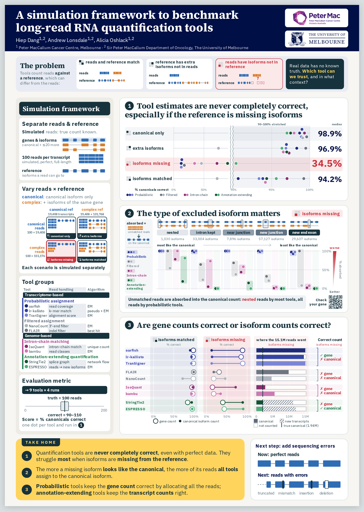

Poster · ABACBS 2026
Hiep Dang, Andrew Lonsdale, Alicia OshlackPeter MacCallum Cancer Centre · Sir Peter MacCallum Department of Oncology, The University of Melbourne

Tap the poster to open the PDF and zoom in.